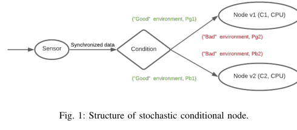
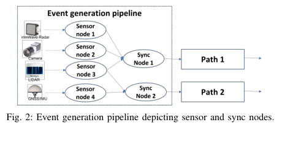
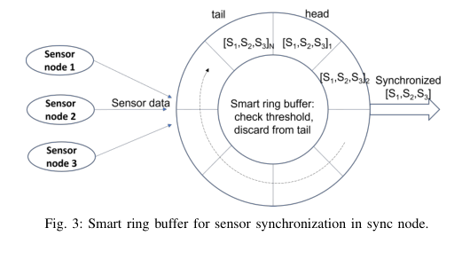
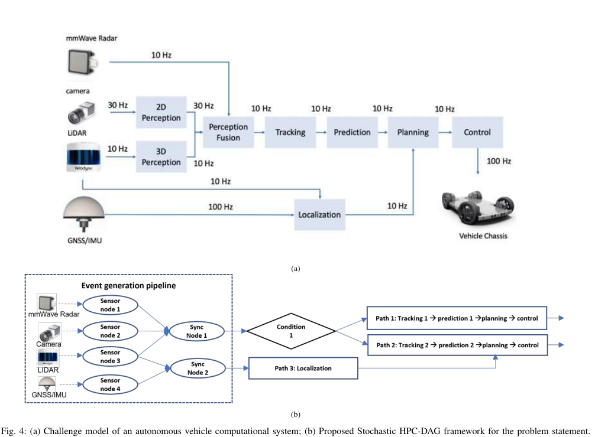

随机条件 DAG 中带安全-性能权衡的 S-Bottleneck 调度中文翻译稿
摘要。本文提出一种用于异构硬件平台实时应用的随机条件 DAG 模型和调度启发式。作者将应用建模为 Stochastic Heterogeneous Conditional DAG（StochHC-DAG）：节点带有处理器类型标签，边或条件节点带有概率，任务执行时间不再使用单一 WCET，而是用概率分布描述。为了在安全关键场景中减少悲观性，论文提出 S-bottleneck 启发式和 safety-performance（SP）指标，用于在线或近在线地在安全风险和性能收益之间折中。
1 系统模型
StochHC-DAG 扩展了传统异构 DAG。每个计算节点有固定处理单元类型，例如 CPU、GPU 或 DLA；边表示数据依赖，并可附带路径概率；执行时间由概率分布给出，而不是固定最坏情况。模型还加入条件节点、传感器节点和同步节点，用于描述自动驾驶等场景中的环境判断、传感器延迟和多数据流对齐。
这种设计的核心是承认运行环境不可完全预测。比如目标检测在好天气和坏天气下可能走不同处理路径，传感器时间戳也可能存在漂移。如果所有情况都按最坏情况调度，资源会被严重浪费；如果完全忽略极端情况，又会损害安全性。


2 S-Bottleneck 调度
精确求解条件 DAG 的调度问题代价很高，尤其在异构硬件和概率执行时间下更不现实。作者因此采用 shifting bottleneck 思路：先按节点标签把任务划分到对应处理器类型，再在每个处理资源上寻找最限制整体性能的瓶颈部分，逐步调整局部顺序来改善全局目标。
S-bottleneck 的重点不是只最小化平均完成时间，而是同时考虑安全和性能。调度器需要判断哪些路径虽然概率低但安全代价高，哪些路径高概率且收益大，从而避免把资源过度倾斜到平均情况或极端最坏情况。
3 Safety-Performance 指标
SP 指标把任务完成时序、条件路径概率和安全收益/惩罚统一起来。按论文思路，提前或及时完成关键任务会得到 reward，错过安全相关路径的约束会产生 penalty。这样，调度目标可以表达为最大化期望安全-性能收益，而不是只看 makespan 或 processor utilization。
这种指标适用于自动驾驶挑战问题：感知、定位、预测、规划和控制链路有不同频率和延迟要求，且不同环境条件触发的路径风险不同。调度器要在有限算力下优先保证对安全影响更大的链路。


4 局限与启发
这篇论文篇幅较短，更像挑战赛方案说明。它给出了模型、指标和调度思路，但实验深度、理论保证和大规模系统实现都较有限。其价值主要在于把 stochastic execution、conditional branch、heterogeneous processor tag 和 safety-aware scheduling 放进同一框架。
对本仓库方向的意义。这篇适合作为“概率条件 DAG + 异构执行器 + 安全/性能权衡”的轻量参考。若研究 LLM agent workflow，可以把安全 penalty 替换为答案质量、成本、deadline、SLO violation 或用户体验损失，从而构造适合 AI serving 的 stochastic workflow scheduler。
参考说明
参考文献保留在原 PDF 中。本文覆盖摘要、StochHC-DAG 模型、S-bottleneck 调度、SP 指标和研究启发。